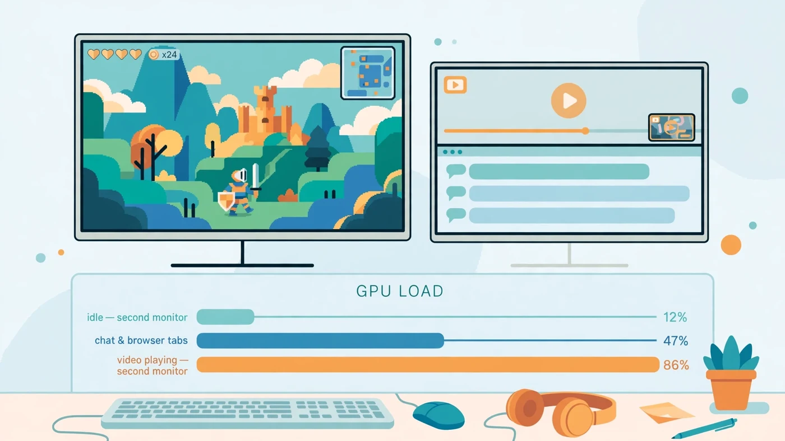

Does a Second Monitor Lower FPS? What Actually Costs Frames
The short answer: does a second monitor lower FPS? Barely, on its own. Simply plugging in a second monitor and leaving it on a static desktop costs your graphics card very little, and most gamers will not notice any difference. The FPS drop people blame on the second monitor usually comes from what runs on it — a video stream, a browser full of animated tabs, a second game, or a stream encoder — not from the extra screen itself. This guide explains what a second monitor actually costs, which workloads genuinely lower FPS, and how to test and fix it on your own PC.

Does a Second Monitor Lower FPS When Nothing Is Running on It?
No, not in any way that matters for most setups. A modern graphics card is built to drive several displays at once. Showing a desktop background, a taskbar and a few still windows is light work: the GPU draws those pixels once and then mostly leaves them alone until something changes. Your game, by contrast, redraws its whole frame dozens of times per second, so the second screen's share of the work is tiny by comparison.
That is why the classic test — game running, second monitor on but idle — usually shows no change you can feel. If your frame rate is already low, the cause is almost always elsewhere: a CPU or GPU bottleneck, a demanding setting, too little video memory, or a frame cap you forgot about. Blaming the idle second monitor is an easy mistake because it is the most visible change in the setup, but it is rarely the limiting part. If you want proof rather than a guess, the two-minute test later in this guide settles it for your exact PC.
There is one exception: on a very weak graphics card, or on integrated graphics with no dedicated GPU, even a second display takes a noticeable share of limited resources — as does a 4K second monitor, since every extra pixel needs a frame buffer in video memory. On a mid-range or better gaming GPU, though, an idle second monitor is essentially free.
What a Second Monitor Actually Costs Your GPU
Think of a second monitor as three small costs, not one big one. First, pixels: the GPU must hold a picture for each display and refresh it at that display's refresh rate, so a 1080p second screen costs far less than a 4K one. Second, video memory: each display's frame buffers and open windows take a slice of VRAM, small for a desktop but larger with resolution and video playback. If your card is already near its VRAM limit, that extra slice can push it over the edge — our VRAM guide explains how to tell when that happens.
Third, and most important, is the work running on the second screen. A static window needs almost nothing after it is drawn. An animated web page, a video, a live stream preview or a second game needs continuous work: decoding, compositing and redrawing, frame after frame, in parallel with your game. That is the real cost, and it scales with how busy the second screen is. A second monitor does not lower FPS by existing; it lowers FPS by giving demanding apps a place to run while you play.
The Second-Monitor Workloads That Do Lower FPS
Not all second-screen activity is equal. Ranked from lightest to heaviest, this is how typical workloads affect your game:
| Second-monitor workload | Typical FPS effect | Why |
|---|---|---|
| Static desktop, chat window, notes | Negligible | Almost nothing changes frame to frame |
| Browser tabs and monitoring tools | Very small | Occasional redraws and light CPU use |
| Music player or podcast | Very small | Audio decoding is cheap; visuals are static |
| Video stream or YouTube video | Noticeable | Continuous video decoding plus display work |
| Streaming or recording (OBS and similar) | Noticeable to large | Encoding competes with the game for GPU and CPU |
| A second game or 3D app | Large | Two renderers fighting for the same GPU |
Video deserves special attention because it is the most common culprit. Browsers often use GPU acceleration to decode and display video, which is efficient in isolation but still consumes decoder hardware, memory bandwidth and display bandwidth while your game wants the same resources. A small video window costs less than a fullscreen high-resolution stream, and pausing the video usually returns the lost frames immediately — a quick test that confirms video was the cause. If you stream your own gameplay as well, see our streaming while gaming guide, because encoding adds a second, larger cost on top.
When a Second Monitor Lowers FPS a Lot
A second monitor lowers FPS a lot only when several pressures combine: a GPU already near full load, so any extra work steals frames directly; tight video memory, where the second screen's buffers worsen texture swapping to system memory; or a CPU limit, where background apps on the second screen consume threads a CPU-limited game also needs — which is why a CPU running at 100% feels a second monitor more than a GPU-limited system does.
Resolution and refresh rate stack on top of that. A 4K second monitor showing video costs far more than a 1080p one showing chat, and a high-refresh second monitor asks the GPU to refresh that picture more often. Gaming across both monitors at once — spanning one game over two screens — is a different case entirely: the GPU must render roughly twice as many game pixels, and FPS falls for the same reason raising resolution does. That is a resolution cost, not a second-monitor penalty, but it surprises people who expect two screens to behave like one.
Mixed Refresh Rates: Can a Second Monitor Cause Stutter?
Sometimes the complaint is not lower average FPS but stutter: the game feels choppy even though the headline frame rate looks fine. Mixed refresh rates — say a 144Hz gaming monitor beside a 60Hz second monitor — have historically been linked to this, especially when video plays on the slower screen while a game runs on the faster one. The two displays refresh on different schedules, and in some driver and browser combinations that mismatch shows up as uneven frame pacing in the game.
This is not guaranteed, and modern drivers handle it far better than older ones did. The practical test is simple: pause any video on the second monitor and see whether the stutter clears; if it does, video plus mismatched refresh rates is your trigger, not the second monitor alone. If stutter persists with a static second screen, read our guides on stuttering and 1% lows and frame time — the cause is more likely frame pacing, storage or a CPU limit than the extra display.
Second Monitor FPS Test: Prove It on Your Own PC
Guessing wastes upgrades; a two-minute test gives you the answer for your hardware. First, pick a repeatable scene in your game — a fixed route, a benchmark mode, or simply standing in the same busy spot — and note your FPS with your normal second-monitor setup. Use the game's built-in counter or an overlay, and keep the second screen exactly as you normally use it. Second, close everything on the second monitor but leave the monitor itself on, and test the same scene again. Third, turn the second monitor off entirely (Windows + P, then PC screen only) and test once more.
Compare the three numbers, not just the first and last. If FPS barely moves across all three, your second monitor is not the problem — spend your effort on settings or the part our bottleneck check guide names instead. If FPS jumps when you close the video or the browser but not when you switch the monitor off, the app was the cost, not the screen. Only if FPS jumps when the monitor itself goes dark is the display pipeline genuinely costing you frames, and then the fixes below — lower second-screen resolution, simpler content, or a stronger GPU — are the ones that matter.
Watch GPU usage and VRAM while you test, not just FPS. If GPU usage is low while FPS is low, you may be looking at a low GPU usage problem instead — a CPU limit, a cap, or a setting — and unplugging a monitor will not fix it.
How to Stop a Second Monitor Lowering FPS
Start with the free fixes, in this order. Pause or close video on the second monitor while you play, or move it to a phone or tablet if you want it running. Close browser tabs you are not reading, especially ones with auto-playing media, and close overlays and animated widgets you do not need. If you stream or record, lower the encoder load or use hardware encoding so the game keeps more of the GPU — and accept that streaming always costs something, second monitor or not.
Next, tame the second display itself. Drop a 4K second monitor to 1080p for gaming sessions if VRAM is tight, keep its content static — chat, notes or a map rather than video — and make sure the gaming monitor is set as your main display and the game runs on the graphics card, not integrated graphics. Keep graphics drivers current, since multi-display stutter fixes often arrive in driver updates.
Finally, know when hardware is the answer. If the test shows a real cost and you regularly game with video, streaming or a second app open, a graphics card with more VRAM and more headroom is the honest fix — not a fancier monitor. Before buying, check your pairing on the PC Bottleneck Calculator (see its methodology) so you upgrade the part that is actually limiting you.
Should You Unplug Your Second Monitor for Competitive Games?
For most players, no. The convenience of chat, notes or a map on a second screen is worth far more than the frames an idle second monitor might cost — if it costs any at all. Competitive players chasing maximum consistency should still test rather than assume: run the three-step test above, and if the second monitor with your usual apps costs nothing measurable, keep it.
Unplug — or rather, switch to PC screen only with Windows + P, which is faster than unplugging — only in specific cases: a tournament or ranked session where every frame counts and you have measured a real drop, a VRAM-starved system where every buffer matters, or a streaming setup where encoding already eats your headroom. For everyone else, the right move is not fewer monitors but less demanding content on the second one.
Free PC Bottleneck Calculator — Estimate CPU and GPU balance for your resolution and workload: check whether your CPU or GPU is the slow half of the frame on the PC Bottleneck Calculator (see its methodology page) before you buy an upgrade because a second monitor seemed to cost you FPS.
Conclusion
So, does a second monitor lower FPS? On its own, barely — an idle second screen is one of the cheapest things you can attach to a gaming PC. What lowers FPS is the work you put on that screen: video decoding, streaming and encoding, a second game, or a browser full of animated content, especially when the GPU is already full or VRAM is already tight. Test it the three-step way, keep second-screen content static while you play, and you get to keep the convenience without paying for it in frames. If the test shows a real cost, fix the workload first and the hardware second.
Frequently Asked Questions
Does a second monitor lower FPS if nothing is running on it?
Barely, if at all. A second monitor showing a static desktop costs the graphics card very little work, so any FPS change is usually too small to notice in a game. If you do see a drop with nothing running on the second screen, look for a frame cap, a driver issue or a different bottleneck first.
Does watching YouTube on a second monitor lower FPS?
Yes, this is the most common real cost. Decoding and displaying a video uses GPU video hardware, video memory and sometimes CPU time, all while the game is running. A static chat window costs far less than a moving video, and a high-resolution video costs more than a small one.
Does a second monitor lower FPS in competitive games?
Only if something demanding runs on it. For competitive play, keep the second monitor to static content such as chat or a score page, close video streams, and cap your frame rate sensibly. If you chase every frame, testing with the second monitor off is the honest way to see whether it matters on your PC.
Do different refresh rates on two monitors cause stutter?
They can, in some setups. Mismatched refresh rates have historically caused stutter when video plays on the second screen while a game runs on the first, because the two displays refresh on different schedules. Keeping drivers up to date and testing with the second monitor's video paused usually shows whether this is your problem.
Should I unplug my second monitor to get more FPS?
Usually not. Unplugging helps most when the second monitor runs something demanding, when video memory is already tight, or when you are streaming or recording from the same PC. If the second screen only shows chat or a static page, the convenience is worth far more than the frames you would gain.
Sources
Official documentation referenced in this guide: